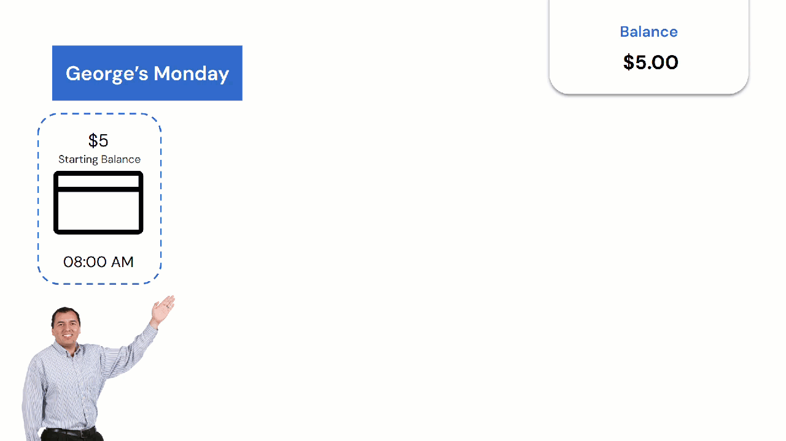
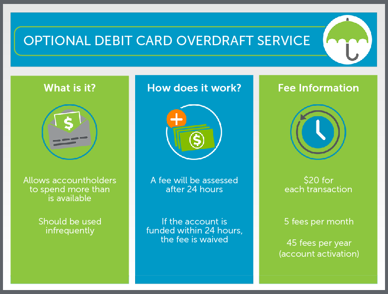
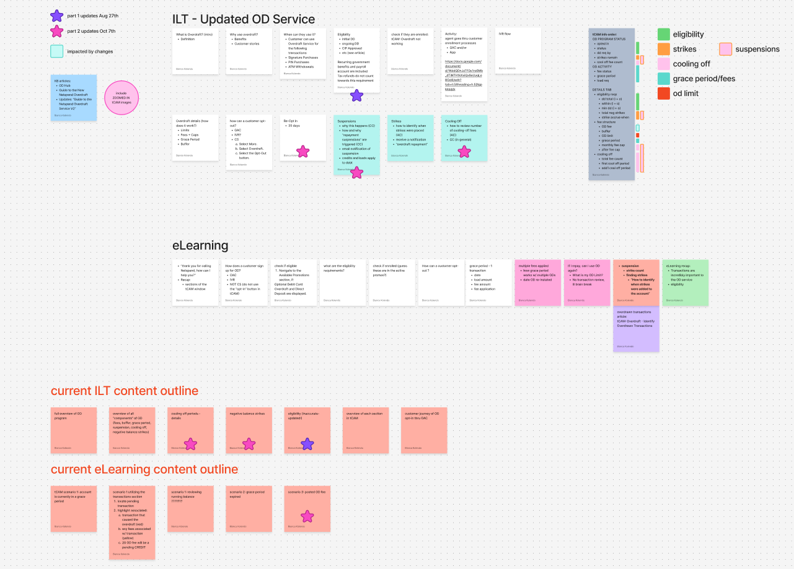
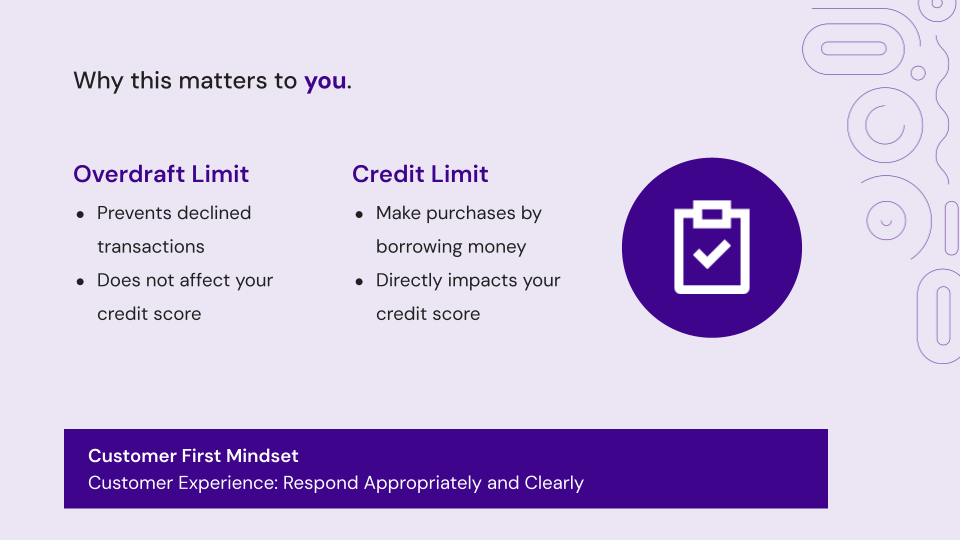

ILT Redesign
Netspend | Customer Success | Q2-Q3 2025
I redesigned a critical ILT to address one of the most complex CS support topics — the Overdraft Service. The existing 4-hour training was outdated, inaccessible, and difficult for global agents to grasp. By restructuring content around real customer scenarios, simplifying language, and improving accessibility, I increased the Flesch–Kincaid readability score by 18 points, doubled relevant content, and set the foundation for measurable QA improvements.

Problem
Overdraft Service was a top driver of escalations for CS Agents.
The existing 4-hour ILT had major gaps:
- Outdated and inaccurate content in both ILT and job aids.
- Poor readability (Flesch–Kincaid score: 52.2), making it especially challenging for ESL learners.
- Low visual accessibility with contrast issues and dense, small text in presentation.
- No context or real-world application, leading to low engagement.

Research & Analysis
As a top problem area for agents, this was a golden opportunity to revisit this content. Before getting started on creating new content, I needed to educate myself on the Overdraft Service program and agent issues.
Key insights:
- Facilitator scripts were too formal and complex.
- Agents lacked practical context, especially in regions without overdraft services.
- Agents using “Credit Limit” instead of “Overdraft Limit” terminology caused customer confusion.
- Content followed the tool’s UI structure rather than a logical, customer-centered flow.

Design Process
My goal was to create a clear, accessible, and scenario-driven ILT that increased agent confidence and reduced escalations.
To do this, I:
- Reorganized content around a customer story instead of product UI to build contextual understanding.
- Defined clear learning objectives:
- How to identify overdraft program details.
- Differentiate overdraft from similar services.
- Identify overdraft transactions in the system accurately.
- Focused on accessibility by simplifying language and designing simple, high contrast slides.
- Built content in Google Slides instead of Captivate for development speed and easy collaboration.
Development
I built the new ILT in under four weeks while supporting other projects.
Major Improvements
- Created customer scenarios illustrating overdraft features like Buffer, Grace Period, and Fees.
- Rewrote complex script language, raising the Flesch–Kincaid Reading Ease score from 52.2 to 70.2 (+18).
- Added callout slides to connect scenarios to agent QA scoring to reinforce practical impact.
- Doubled content page count without increasing total training time.

Next Steps
By reframing the training around context and accessibility, I transformed a confusing, outdated ILT into an adaptable,
learner-centered experience that directly supports agent performance and customer satisfaction.
Next steps:
- Partner with QA track overdraft-related calls post-launch and measure training impact.
- Develop an eLearning with scenario-based practice to reinforce skills after ILT.